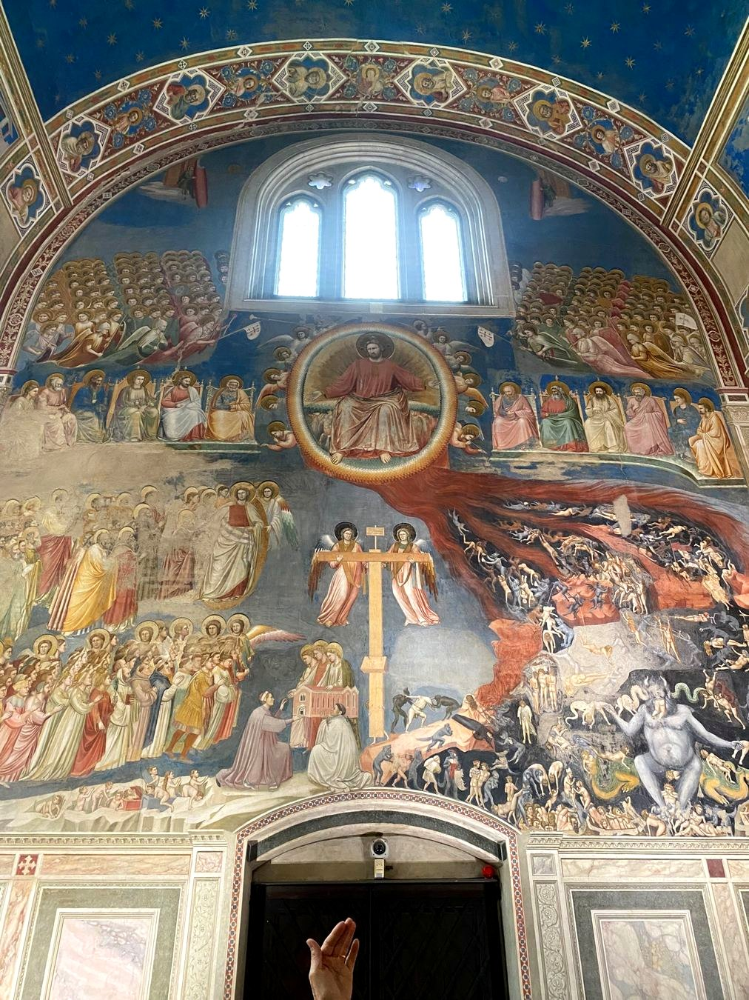
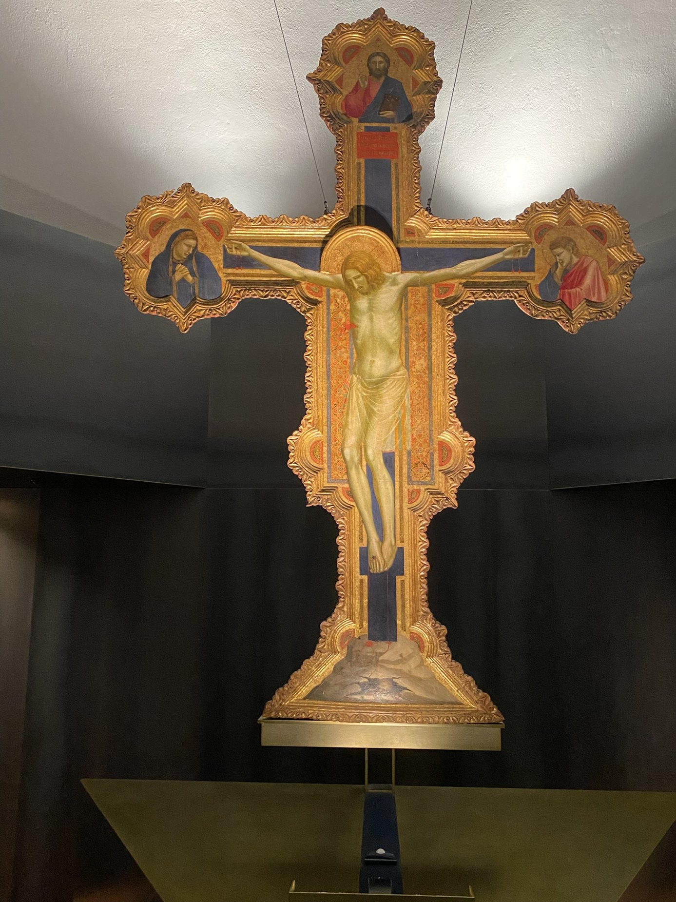

Préparer une visite • retrouver une œuvre
Lieux & musées
Retrouver les œuvres déjà présentes sur le site selon l’endroit où elles sont conservées. Cliquez sur une vignette pour agrandir l’œuvre.
Padoue
Giotto : les fresques de la chapelle des Scrovegni et le crucifix conservé aux Eremitani.
Chapelle des Scrovegni
Site officiel des musées de Padoue ↗
Giotto — Fresques de la chapelle des ScrovegniVers 1303–1305 · Chapelle des Scrovegni
Cycles de Joachim et Anne, de Marie et du Christ ; voûte étoilée.
Comprendre le cycle peint →
Giotto — Le Jugement dernierDébut du XIVe siècle · Chapelle des Scrovegni
Composition monumentale autour du Christ juge, sur le mur occidental.
Observer le Jugement dernier →Musei Civici agli Eremitani
Site officiel des musées de Padoue ↗
Giotto — Crucifix peintDébut du XIVe siècle · Musei Civici agli Eremitani
Un corps qui semble peser : à comparer avec le crucifix de Cimabue.
Comparer Cimabue et Giotto →Florence
Les œuvres sont classées par musée.
Museo di San Marco
Accès Museo di San Marco↗
Fra Angelico - L’Annonciation de San Marcov. 1440–1445

Fra Angelico - La Déposition de croixv. 1432–1434

Fra Angelico - Le Jugement dernierv. 1431
Galerie des Offices
Accès Galerie des Offices ↗
Cimabue - Maestà de Santa Trinitavers 1290–1300
Santa Croce
Site officiel Santa Croce↗
Cimabue - Crucifix de Santa Croceavant 1288
Palazzo Medici Riccardi
Site Palazzo Medici Riccardi↗
Benozzo Gozzoli - Procession des Magesà partir de 1459
Basilique Santa Maria Novella
Site officiel Basilique Santa Maria Novella↗
Masaccio — La Trinitévers 1425–1428
Chapelle Brancacci — Santa Maria del Carmine
Site Chapelle Brancacci — Santa Maria del Carmine↗
Masaccio et Filippino Lippi — Résurrection du fils de Théophile et saint Pierre en chaireXVe siècle (achevée par Filippino Lippi)

Masaccio — L’Expulsion d’Adam et Èvevers 1426–1427

Masaccio — Saint Pierre guérissant les malades avec son ombrevers 1425–1427
Les monuments de Brunelleschi
Voir la fiche artiste →À découvrir à Florence : l’Hôpital des Innocents (Piazza della Santissima Annunziata), San Lorenzo, Santo Spirito et la coupole de Santa Maria del Fiore. Ces monuments sont des lieux de visite, et non des œuvres conservées dans un musée.
Museo Nazionale del Bargello
Site du musée ↗
Donatello — Saint GeorgesVers 1415–1417

Donatello — DavidMilieu du XVe siècle

Donatello — Saint Georges et le dragonVers 1417
Museo dell’Opera del Duomo
Site du musée ↗
Donatello — Marie-Madeleine pénitenteVers 1453–1455
Cascia di Reggello (Toscane)
Près de Florence.
Museo Masaccio d’Arte Sacra
Museo Masaccio d’Arte Sacra↗
Masaccio — Triptyque de San Giovenale1422
Paris
Musée du Louvre
Site officiel Musée du Louvre↗
Fra Angelico - Le Couronnement de la Viergev. 1430–1432